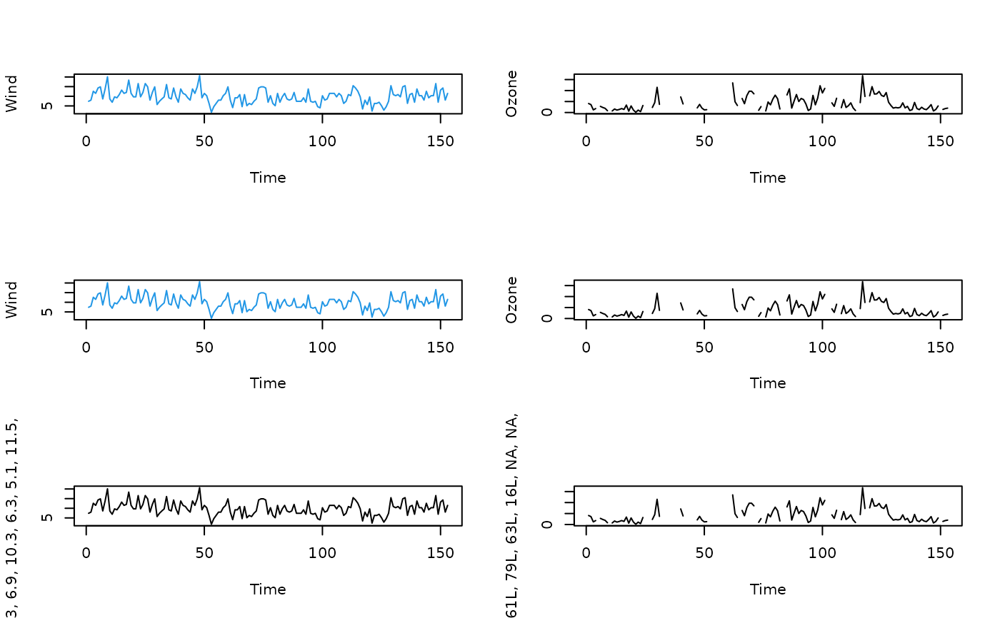
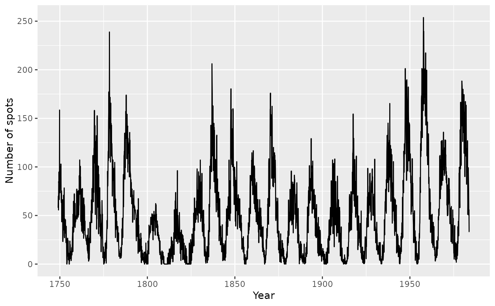

Create a standard time series plot with a few extra elements added to the output object
TSPlot.RdThis function is a wrapper to the standard plott() function in the graphics package. It is tailored to generating a time series plot, and adds detail to the stored object so that a better text description can be formulated using the VI() method in the BrailleR package. The function will become redundant once all other BrailleR functionality is working well with ggplot style graphics.
Arguments
- .data
the data.frame from which variables are drawn. Ignored if using base graphics.
- x
a numeric variable. N.B. when using base or non ts data you must explicitly specify them by naming this argument.
- base
Use base style graphics. Default is to use ggplot2 instead.
- time
a numeric or date variable. Only used by ggplot. This will be the values plotted along the x axis. If it is left at
NULLthen the x axis will be a sequence from 1 tolength(x)- ...
additional arguments passed on to the plotting function.
Details
This function was originally designed to be a wrapper that would draw the base graphics plot for a time series. The saved object can be plotted later with a call to plot.
From v0.33.0 onwards, the function can complete the original intention, but the ggplot2 package's improved interaction with BrailleR means this is the now the preferred style of plot. This plot wont be plotted by default so you need to expressly call the plot or print method.
Value
Either:
1. An object of class tsplot, with the addition of any calls to the main title or axis labels being explicitly stored even if a zero length character string, or
2. A ggplot object.
References
Godfrey, A.J.R. (2013) ‘Statistical Software from a Blind Person's Perspective: R is the Best, but we can make it better’, The R Journal 5(1), pp73-79.
Examples
# with base
attach(airquality)
op = par(mfcol=c(3,2))
plot(as.ts(Wind), ylab="Wind", col=4)
test1 = TimeSeriesPlot(x=Wind, col=4, base=TRUE)
#> Warning: "base" is not a graphical parameter
#> Warning: "base" is not a graphical parameter
#> Warning: "base" is not a graphical parameter
#> Warning: "base" is not a graphical parameter
#> Warning: "base" is not a graphical parameter
test1 #does the plot method work?
plot(as.ts(Ozone), ylab="Ozone")
test2 = TimeSeriesPlot(x=Ozone, base=TRUE)
#> Warning: "base" is not a graphical parameter
#> Warning: "base" is not a graphical parameter
#> Warning: "base" is not a graphical parameter
#> Warning: "base" is not a graphical parameter
#> Warning: "base" is not a graphical parameter
test2 # does the plot method work?

par(op)
detach(airquality)
# with ggplot
if(require(ggplot2)){
basic = TimeSeriesPlot(airquality, x=airquality$Temp)
basic
# ts data
withTitle = TimeSeriesPlot(UKDriverDeaths,
main = "UK driver deaths",
sub = "For the month Januaray")
withTitle
withLabs = TimeSeriesPlot(sunspots, ylab="Number of spots", xlab="Year")
withLabs
}
#> Don't know how to automatically pick scale for object of type <ts>. Defaulting
#> to continuous.

#> This is an untitled chart with no subtitle or caption.
#> It has x-axis 'Year' with labels 1750, 1800, 1850, 1900 and 1950.
#> It has y-axis 'Number of spots' with labels 0, 50, 100, 150, 200 and 250.
#> The chart is a set of 1 line.
#> Line 1 connects 2820 points.